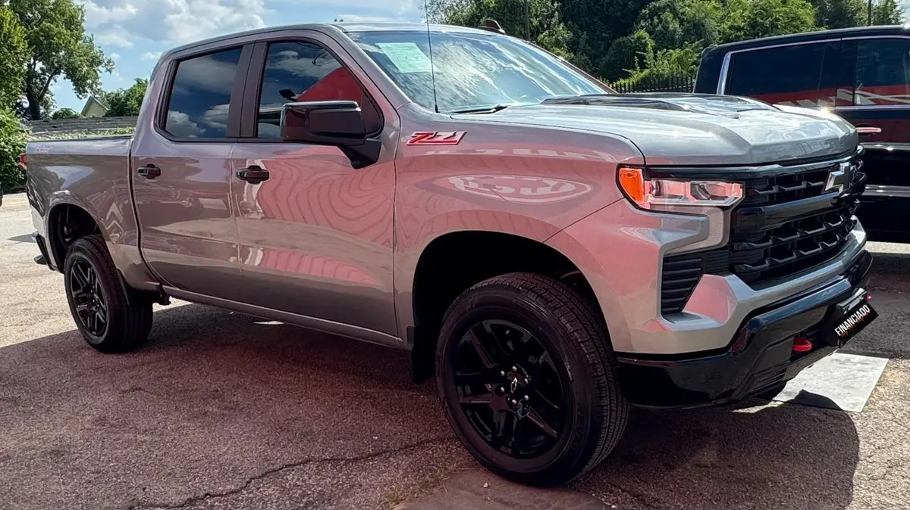

2024 Chevrolet Silverado Z71 Trail Boss
Gray • ID CCH-480

1/5General
| Year | 2024 |
|---|---|
| Make | Chevrolet |
| Model | Silverado Z71 Trail Boss |
| Type | Truck |
| Color | Gray |
| Mileage | 75,000 miles |
| Drivetrain | 4x4 |
Model specifications
| Engine | 2.7L TurboMax I4 (standard in Custom, RST and Trail Boss; options: 5.3L V8, 6.2L V8, 3.0L Duramax diesel; the ZR2 trae 6.2L or diesel) |
|---|---|
| Horsepower | 310 hp (2.7L; 355 the 5.3L, 420 the 6.2L, 305 the diesel) |
| Torque | 430 lb-ft (2.7L; 383 the 5.3L, 460 the 6.2L, 495 the diesel) |
| Transmission | 8-speed automatic (2.7L) or 10-speed (V8 and diesel) |
| Model drivetrain | RWD or 4WD (varies depending on unit) |
| Fuel economy (MPG) | City: varies: 18 (2.7L), 16 (5.3L), 23 (diesel), 15 (6.2L). Highway: varies: 22 (2.7L), 22 (5.3L), 29 (diesel), 20 (6.2L) |
| Fuel | Gasoline (diesel optional) |
| Max towing | 13300 (max configurado; 8800 in ZR2; varies depending on unit) |
| Seats | 3-6 |
| Body style | Pickup |
Typical figures for this year and model, taken from public sources (manufacturer, KBB, Edmunds). The dealer confirms the exact engine, drivetrain and equipment of this unit.
Visible in the photos / from the listing name
- 4x4
Great for
For anyone who needs a truck for work and everyday driving.
Year, mileage and features come from the inventory data; confirm this unit's exact details with the dealer. This sheet shows no prices: the dealer provides them in writing.